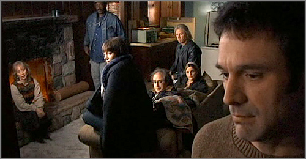

Travailler pour vivre
Ainsi donc, je suis salarié. Officiellement jeune cadre dynamique dans une petite entreprise d'Île de France, prestataire pour maints organismes clients, privés ou publics. Oui, je n'ai pas de diplôme d'ingénieur ni d'autre Bac+5, je suis « ingénieur intégration » sur mon CDI (en période d'essai) malgré mon seul DUT Informatique (Bac+2).
A-t-on seulement besoin d'un Bac+5 pour travailler ? Les études ne sont-elles pas une phase passionnante, enrichissante et palpitante de la vie ? Au bout du compte, que fait-on de nos vies – que fais-je de la mienne ?
Mon vingt-cinquième anniversaire vient de passer, il y a quelques jours à peine, et avec l'aplomb n'est-ce pas respectable (hoho) de ce quart-de-siècle, qu'ai-je à livrer de sagesse ?
À mon avis : rien.
Seulement, j'ai appris au moins deux choses, deux phrases, épiphanies véritables tant ce ne sont pas des apprentissages longs et diffus, mais des suites de mots précis et bien réelles, à inscrire quelque part (ici) pour s'en souvenir.
La circonstance de la première était un peu... sombre peut-être, ou plutôt non pas sombre, j'étais simplement égaré. Une dame m'a dit :
« Il faut parfois toute une vie pour trouver ce qu'on veut faire de sa vie. »
Fondation Bon Sauveur de Bégard, Bretagne
C'était le choc premier. Après avoir entendu ça, il y a maintenant trois ans (je crois), j'ai d'abord été secoué : je ne saurais peut-être jamais ce à quoi je voudrais dédier mon existence, les actes précis à mettre en œuvre, mon métier, mes études. Est-ce que je voulais être dans l'éducation, la recherche, dans l'informatique, les langues, ou carrément tout changer et devenir potier ? (C'est classe la poterie.)
Plus tard, ça s'est apaisé et j'ai compris qu'en fait, hum, comment dire, l'indécision est normale. Non pas normale au sens de statistiquement répandue, normale au sens de saine, correcte.
On n'est peut-être tout simplement pas assez évolués pour agir avec assurance dans tous nos choix de vie, ou alors on avance justement par l'expérience et les erreurs.
Mais en fait, puisqu'il faut parfois toute une vie pour savoir ce qu'on veut faire de sa vie, c'est pas grave si tu ne sais pas, aujourd'hui. Tente, trompe-toi, et surtout change d'avis. Ne reste pas immobile.
Ne reste pas immobile parce que, certes, en restant immobile trop longtemps, tu vas finir par mourir. Mais c'est pas forcément le plus grave. En fait si, c'est grave, mais pour avoir été égaré moi-même, le plus grave c'est pas de mourir, c'est de souffrir. Et je crois qu'il n'y a qu'en avançant qu'on peut ne pas souffrir.
Puis, après avoir commencé à travailler, le voile s'est levé sur mes idées préconçues du monde de l'entreprise : je pensais qu'il y aurait une rigueur, une sévérité, un manager exigeant alors qu'on ne remplit qu'un bullshit job.
En réalité, mon travail me plaît, est concret, est aussi utile. Mais surtout :
« La vie, c'est des gens qui font des trucs. »

The Man Form Earth, le film
Pas de recette magique, j'ai échappé au corporate par chance, j'ai un chef et des collègues sympas, les clients au téléphone ne sont pas tyranniques, le télétravail est agréable et pas surveillé à l'excès. Il y a les points négatifs aussi, notamment sur les finances et les transports en commun parisiens. L'important ici, c'est que ce n'est pas rigoureux au point d'être inhumain. Pas de bonne ou de mauvaise réponse.
Mais surtout, j'apprends sur le tas, et je deviens de plus en plus sûr de moi quand je dois dire : je ne sais pas.
On se mets de la pression pour être opérationnel, avoir le niveau, savoir, être préparé, alors qu'en fait on n'est pas des astronautes ! Eux, les gens de l'espace, sont l'élite de l'humanité, polyglottes, scientifiques brillants, militaires gradés, socialement et psychologiquement droits et stables. Je ne suis ni le plus malin, ni le plus fort, ni vraiment neurotypique.
Mais en fait, les astronautes sont l'infime minorité. Presque personne ne serait capable de prendre leur place, parce que presque personne n'a toutes ces qualités.
De là, j'attaque l'école.
Enfin, je vais plutôt donner mon avis, mon ressenti et mes limites quant au système éducatif.
À l'école, pendant les études, on a des devoirs le soir. On fait des projets de groupe pour telle ou telle matière le weekend. Et ça n'est pas en gras pour rien : l'une des raisons pour lesquelles je n'ai pas fini d'école d'ingénieur, c'est qu'hors des cours, j'ai pas envie d'étudier.
Étudier hors des cours, se forcer à faire ses devoirs, c'était pour moi comme s'identifier aux études, alors que non, certainement pas, je refuse. Je ne veux pas être uniquement étudiant, ni uniquement salarié d'ailleurs. Devoir faire des efforts hors de tout horaire, tout le temps, ne penser qu'aux études, je n'ai pas supporté. En tant qu'étudiant, j'avais pas de vie. (Et j'ai failli en mourir.)
M'bref. Ce qui est bien au travail, c'est que quand on n'y est pas, on n'y est pas.
Ainsi donc : on ne sait pas ce qu'on fait de nos vies, on fait juste des trucs, l'école m'a presque suicidé. Après tout ça, reste encore deux-trois choses à ajouter.
D'abord, franchement tout le monde n'a pas besoin d'un Bac+5. Ou plutôt, les entreprises devraient arrêter de ne prendre que des Bac+5 pour le prestige. En tant qu'informaticien, j'ai plus appris par moi-même que dans mes études, le diplôme m'aurait apporté quelques centaines d'euros en plus par mois. Mais ce fameux salaire d'ingé, il doit bien s'atteindre par l'expérience, avec m'est avis davantage de mérite que par les études.
Ensuite, ceux qui ne travaillent pas, qui vivent du RSA & des allocations de l'État, ne sont pas nécessairement de vils profiteurs paresseux. Les créateurs de startups qui vivent à crédit, les gens actifs dans des associations qui font vivre des communes autrement ternes, les gens qui utilisent leur temps pour alimenter une passion créative, pour s'instruire, ces gens-là sont-ils coupables parce que, oui, ils ne génèrent pas leurs propres revenus ? En un mot, l'argent est-il vraiment la mesure universelle de la valeur ? Suffit de comparer les fortunes de Jeff Bezos (Amazon) et Jimmy Wales (Wikipédia) pour dire que non.
Soit dit en passant, maintenant je donne 4€ par mois à Wikimédia Fondation, parce que c'est utile et que j'en bénéficie au quotidien. Songez-y.
Pour finir, j'aimerais bien dénoncer la valeur travail, cette idée selon quoi la personne qui ne fait pas ses trente-cinq heures par semaine n'est pas digne de respect, parce que la dépression c'est dans la tête, que les études, il n'y a qu'à faire des efforts et se priver quelques années pour avoir une bonne situation plus tard, etc.
La dépression c'est effectivement dans la tête, c'est pour ça que c'est traité par des psychiatres.
Et se priver quelques années, ça sonne pour moi comme une très mauvaise idée, s'habituer à la contrition et au malheur présents pour un futur toujours hypothétique.
Réfléchis, pas trop, efforce-toi de te montrer gentil·le, parce que la gentillesse n'est pas assez vantée. Aussi, continue d'agir.
Et toi, que fais-tu de magique ?